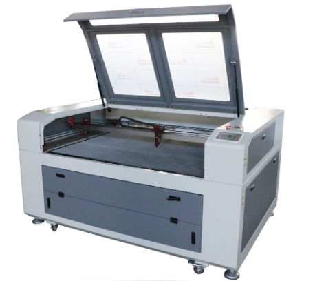
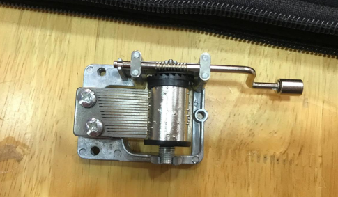
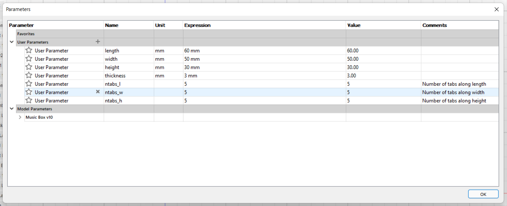
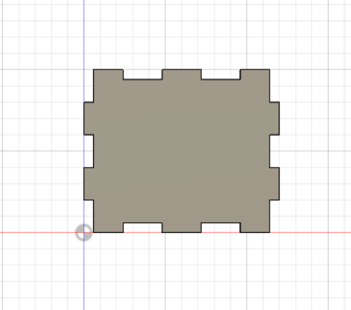
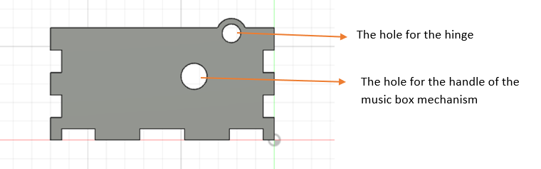
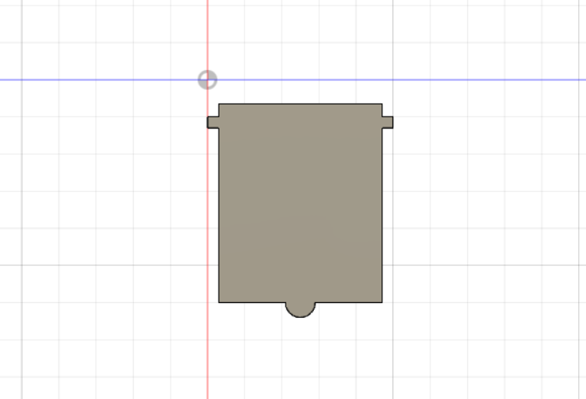
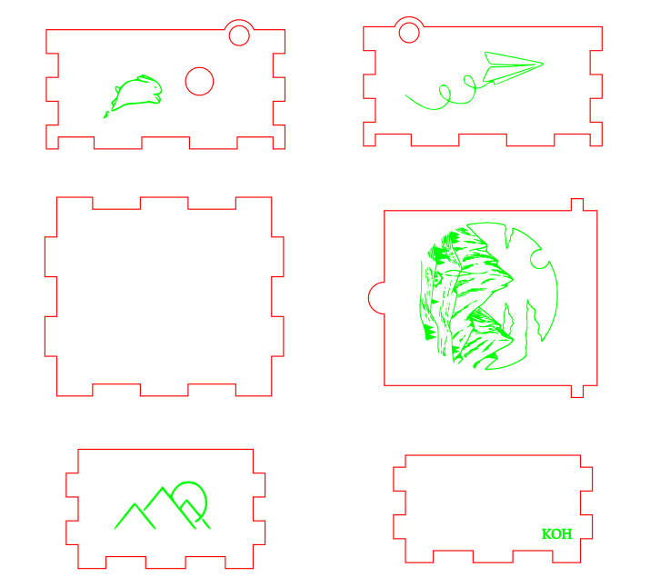
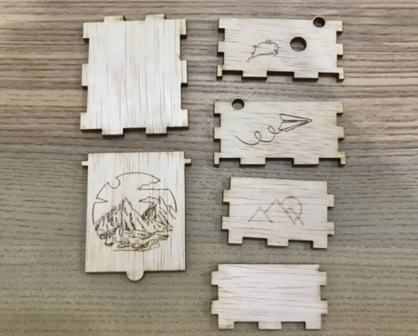
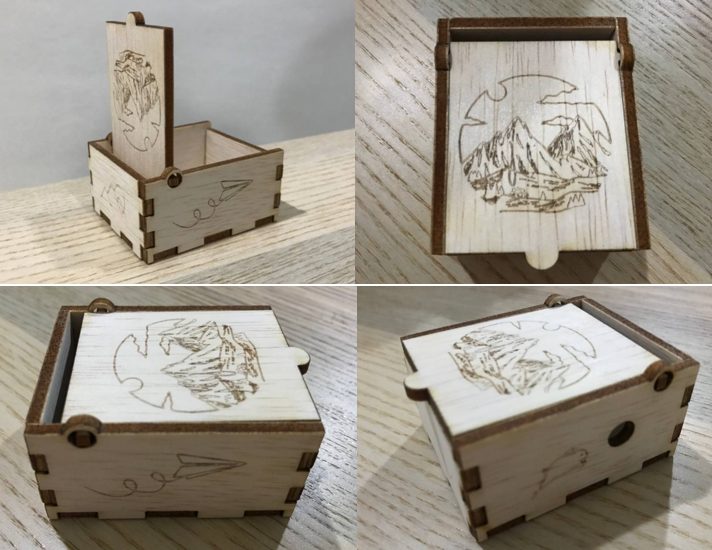

Laser Cutting
Laser cutting is a technology which uses laser beam to melt material at a specific area. When the laser beam touches the surface of the material, it will start to heat strongly and melt or completely vaporises the material. Laser cutting has high precision and accuracy to obtain the shape and design of model that we have designed. Laser cutting promotes higher sheet utilization with less waste as we can allocate the area we wish to cut the object.
Music Box
Before drawing the music box model, I measured the size to get the precise length and width of the music box mechanism.
Then I started drawing the model using Fusion 360. I started off with the parameters of the model. I set the length, width and height of the model using the measurement I have measured from the mechanism and giving some buffer to ensure the mechanism can fit into the model. Then I started sketching the bottom piece of the model. After completing the sketch, I extrude the sketch by 3mm which is the thickness of the wood.
 I continued drawing the sketches and extruded for the sides and the top of the model. I included the details such as the circular hole as the hinge for both sides of the model and the hole for the handle of the music box mechanism. Then I designed the top piece of the model extension of wood at the back and front side as the hinge. After completing the model in Fusion 360, I save the sketch for each side of the model as DXF file.
 After saving the files, I imported it into Inkscape. I arranged the pieces accordingly and started importing the files that I want to engrave on the wood. I select the downloaded images and trace bitmap to convert it into raster image file. Then I placed the raster image on the wood piece according to my design. I changed the outline to red for the wood pieces to be cut and green for the wood pieces to be engraved.
Then I save the edited file as DXF file. In the lab, I opened the file in CorelDraw to do checking and did some editing work. Once I am ready, I can start printing the wood pieces.
Final Product
Images below show the completed final product of my music box.
It was a great experience designing a music box. It has been very challenging yet fulfilling while completing the assignment. I had a further understanding on the application of Fusion 360 software. After the assignment, I was able to utilize the knowledge learnt in my Final Year Project. I am grateful for the oppurtunity given to use the laser printing and produce my very ownn music box design.